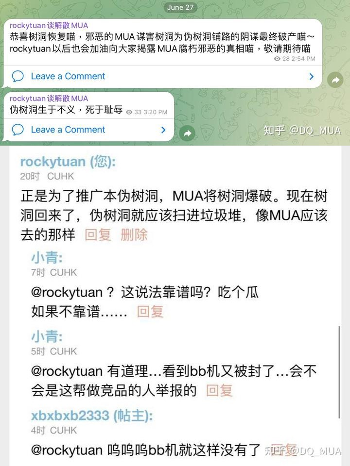
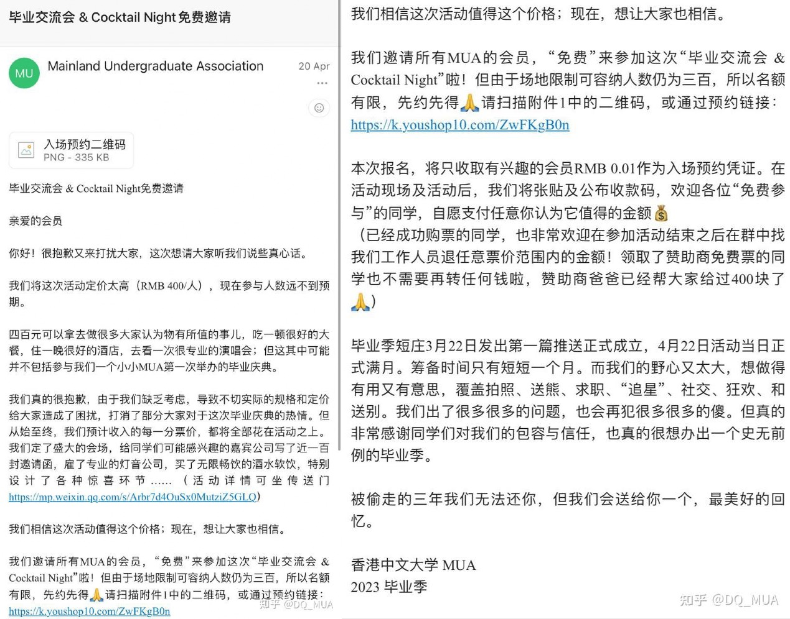

对香港中文大学内地生联合会(MUA)的九条评论
(2023年7月17日 第三次修正) pdf档案我们支持解散内地生联合会(MUA)，以下将从九个方面讲述MUA的失败。 MUA收了我们内地生的钱自称代表我们，却总在制造丑闻而不干实事，因此必须解散。同时呼吁所有的MUA成员退出MUA大会，退出MUA内阁，退出MUA监察会。
欢迎参加解散MUA联署
2. MUA丑闻频出。
最近三年MUA已经沦为一台彻底的丑闻制造机。 2020年选举时为了达成修改会章的最终目的，MUA在第一次投票未达标的情况下，跳过会员的认可，强行开设第二次投票。浙江在“操控选举”部分详细论述。 2021年的内阁由于滥用职权，前无古人地遭到了弹劾，史称“一二三事变”。关于其被弹劾的原因可以参见下图，事实上其中不少是MUA历届内阁的通病。
而到了2022选举，当选内阁在选举结束当晚便被发现政纲是复制粘贴前届的。这种严重的抄袭行为严重破坏学术诚信，往往能成为一个政客/内阁被弹劾的铁证，最终却也不了了之。且当选内阁竞选时声称要服务同学，当选后却开始装死，没有向学校反应内地生的需求，也对一切的丑闻不再回应，显然是选举欺诈。有人会说他们还没上任，没有正式身份。但“当选内阁”也是身份，或者说，以“中大同学”的身份也可以向学校提出诉求（正如前面提到的退宿事件）。当选内阁完全没有为内地生服务的迹象，很难相信上任后就会开始。
可以说，这些年MUA仅有的存在感便是权力斗争。
3. MUA无力组织活动。
即使在正常年份，MUA能拿得出手的活动本就少得可怜。诸如ocamp，中秋游园和文化节等，这些活动完全可以由社团完成。到了社运和疫情期间，活动更是一砍再砍：ocamp从取消香港游，到彻底挪至线上，再到所谓“深圳precamp”，活动内容正在可悲地缩水。文化节彻底失去踪影。而去年的中秋游园，MUA试图用一块小小的月饼糊弄过去，真的不会有人稀罕。
在此详细论述停办MUA的ocamp的必然性。
内地生本来和本地生一样，都是中大的一家人，ocamp是建立交际圈的重要机会，而将内地生单独圈出来搞活动是毫无意义的，且会加深中大学生之间的隔阂。在ocamp之后，想要进入新的圈子难度会高很多，也正是如此，很多内地生直到毕业也没几个本地生朋友，粤语不会几句，却经常微信群或树洞表现出对本地生无知的傲慢。本地生反过来也是如此。这一切的元凶便是MUA举办的内地生ocamp。内地生ocamp应当停办，老鬼和新生应该以组爸妈和freshman的身份参加大学的细o和大o。这样便能深度理解本地生的想法，也能让他们理解内地生，并结识友人，真正促进大学引以为傲的多元文化。现在我们也看到，MUA已经失去了大学的支持，其主办的ocamp不再能在学校开展活动，因此成本陡增而内容骤降，内地生ocamp的丧钟已经敲响。
有人担心语言问题，这是多虑的。广东话和普通话差异没有想象中的大。多和本地生交流，粤语将会突飞猛进地提高。如果有内地生当组爸妈，那就轻松了。没有也没关系，本地生听得懂，也能讲一些普通话。本地新生对内地生大多是欢迎且好奇的，不需要担心被孤立。
有人认为内地生ocamp“不爱来可以不来”。但事实上内地新生刚来香港没两天，迫切希望开始稳定的联系。那和录取通知一起寄过来的内地生ocamp通知显然是欺诈。
有人说我反对内地生ocamp是因为“没捞到好处”。这是自私的想法。我反对内地生ocamp是因为其总体无趣，可预见的将来也是如此，且客观上阻碍了内地生和本地生的交流。
4. MUA无法为内地生争取权利
今年六月，中大深圳成功推行了gpa改革，这在中大内地生群体中引发轩然大波。翻查当时的树洞就能发现，许多人对MUA的不作为表达不满。这只是一件小事，但仔细想想，自社运与疫情，内地生所希望的的退学费宿费，pass/fail，合理的申宿方式等，MUA没有为我们争取到任何权利。这些MUA的内阁，竞选时的政纲无论说多少漂亮话，一旦当选便开始装死，最多给学校发一封邮件完事，这样不可能得到任何权利。
有人认为MUA至少能为内地生“发声“，因此需要存在。事实恰恰相反。正是因为MUA一直给内地生一种虚无缥缈的“为自己发声”的希望，反而打消了内地生直接向学校发声的积极性。在争取权利上，一份几百人的联署会比一个腐朽的领袖更有效。因此MUA不如尽快解散，让我们意识到权利不可能由学校或某些组织授予，而必将由我们自己争取，这样反而对内地生的更有利。
5. MUA失去民心。
由于MUA的无能与腐败，这个组织的口碑越来越差，不再能获得内地生的支持。在树洞搜索“MUA“，大多数是以下两种结果：对MUA的不满，以及对MUA无能的开脱。此外，最近每次选举的投票率一次比一次低，每次都会面临有效票不足的囧境，不得不由庄员在投票截止日向会员单独发消息，一个一个求着投票。讽刺的是，近年来唯一一次获得压倒性有效票数的的事件，便是今年年初弹劾MUA内阁。
6. MUA操控选举。
6.1 MUA 在2020 – 2022年操纵选举
为了挽救选举有效票不足的窘境，MUA不择手段，在三年中至少操控了两次选举。
首先是MUA修改2022年选举规则。在未经选民认可的情况下，MUA选举委员会擅自添加了“信任”选项，也就是认同任何一个内阁当选。效果立竿见影，这次选举收获了大量“信任”票，使得有效票数勉强过线。然而，在所有正常选举中，如果一张选票勾选了每位候选人，那应该记为无效票，因为这毫无意义。但MUA却认为这是有效的，这不符合常识。
可惜在我研究MUA会章后发现，在这个组织，未经选民同意修改选举规则是合法的，可见MUA早已为操纵选举留下了后门。但2020年修改会章则彻底撤下了MUA选举正义的遮羞布。
这是四封邮件的截图。图一是第一次投票的结果，很明显有效票数不达标，会章修改是无效的。但不久后，MUA内阁便发出第二次投票的提议：与其说是提议，不如说是通知，重复说明几条修改会章的好处，并在短短的内部运作后，MUA便推翻了神圣的选举结果，开展了第二次投票。可以预见，如果第二次投票也未通过，MUA便会不断地拉布，否认结果并重新投票，只为给修改会章披上民主的外衣。正常的选举程序是不会允许同一个议题在短时间中反复投票的。 MUA操纵选举让内地生不胜其烦，他们的企图也最终实现。
MUA就是这样操纵选举：在选举前将规则调整为对自己有利；选举后若不满意，便稍加运作推翻结果，重新投票直到选民投出他们想要的结果。
6.2 MUA 2023年选举证据确凿
此次MUA选举疑点重重，有许多证据表明当选内阁“元歧”可能在选举前已经被钦定，而选举的许多细节就是为了帮助元岐顺利当选而设计的，甚至可能包含舞弊。
- 缺乏严格的选举人身分信息核验。
2022年度线上投票需要向选委会”发送露脸手持学生证照片“，方可获得选票。而本次线上投票, 为了挽救持续低迷的投票率，MUA直接通过邮件将选票发送给选民。这种方式使得人们更容易获得并代替他人投票，同时也给MUA操纵选举留下了很多操作空间——也许并非所有选票都来自真人。 - 选举期限无端延长。
根据MUA公众号的说明，选举投票期为4月17日至4月23日。而MUA选举结果公布中却提到本次选票“截止4月24日18点”，意味着MUA公然将投票期延长了一天。这毫无疑问是破坏选举。根据MUA历年选举规律，选举最后一天的投票人数会暴增。也就是说，MUA通过延长投票期使得有效票数达标。此外，如果以公开投票期计，23日选举结束至26日开票，持续时间超过了《选举细则》第二十三条“投票结束 48 小时内公布全民投票结果”。额外的时间为舞弊提供了方便。 - 开票方式可疑。
根据《选举细则》第二十二条，“(开票)凡本会会员皆可到场监票”。此外历年的选举都是在选举后即刻公开开票。而本次选举MUA仅提供一支开票视频 (如上图)。视频很模糊，全程除了展示了统计界面，就是看着一群“工作人员”对着电脑和纸片操作，没有唱票，没有选民监督。因此整支视频没有任何意义，只为糊弄选民，完全是暗箱操作。这劣质的视频程序不正义且不服众。此外，工作人员多次强调线上投票是隐私而不公布，是在掩饰MUA对选举结果的修改。 - 候选内阁可能早被钦定。
在选举期间爆出丑闻“储物事件”：候选内阁元岐竟以MUA之名与企业协商。没有人或组织会在选举之前就自称胜选，并以下任之名行事，除非他们早就得知选举结果，也就是被钦定。我在此的推测是，MUA为保全元岐这独苗，提前向他们保证胜选，并为其扫清选举障碍；然而元岐内阁过于自满，以MUA自居，遭到了今上内阁廿梧的抄袭和打压。
MUA还有多次操纵选举及滥用解释权的案底。因此DQMUA在此呼吁拒绝承认新内阁作为内地生的代表，要求重新选举，并以解散MUA为目标。
7. MUA控制成员流动。
正常的组织最多会限制成员进入，但一定会有合理的程序让成员推出。如果一个组织对加入没有限制，而禁止其成员推出的话，那这个组织与邪教无异。不幸的，MUA就是后者。仔细阅读会章便能发现，MUA会员只能加入，毕业后转为校友会员，而不能退出。也就是说，一旦成为会员，终身都是会员。但大多数新生是在什么都不懂的情况下，被忽悠着加入MUA的，当意识到MUA邪恶本质后已经太晚了，离开的路已经关闭了。
8. MUA控制不利舆论。
8.1 树洞(CU转换器/马料水BB机)无故删除与封禁反对MUA言论账号
中大内地生交流的主要平台是树洞，而树洞与MUA合作控评的猜疑也早已有之。我卧底树洞，通过两个月的观察取证，牺牲了三个账号，终于获得了MUA勾结树洞对不利评论封号禁言的决定性证据。
今年4月16日我在树洞用rockytuan账号发布的的第一篇讨伐MUA檄文发布之后，第二天便被封杀了三个月。第二篇评论在4月19日用cuzedong发布，4月20日便被禁言至五月底。我试图在在树洞的邮箱或是公众号联络管理员，都没有得到回应。
有人认为我被封号是因为发布了政治相关内容。不久后我便创建了gawrtaffy账号活跃在树洞，并等待着机会。在cuzedong于5月底解封后的当天，我仔细阅读了树洞版规后，用该账号发布了第三条评论。这次我小心翼翼地措辞，将一切话题限制在批判MUA上。这次我确信没有违反任何一条规则。但第二天我的账号便被彻底注销，无法接收验证码登录(如上图)。但他们始料未及的是，我不只有一个可以发声的账号。于是我义正言辞地用gawrtaffy账号揭露MUA勾结树洞控制不利言论的本质，第二天也如上图一样被彻底封杀。至于帖子还在，最合理的解释是帖子已经产生了较强的影响力，删除贴文只会凸显MUA的心虚。再此，引用MUA头号人物的言论：“MUA居然还有勾结树洞这个功能哈哈哈哈哈指了一条明路”。
8.2 MUA建立伪树洞(港青荟)加强言论控制。
未曾想MUA前会长一语成谶。 2023年1月28日树洞遭不明身分人士发布色情内容，导致被微信永久封禁。 2月6日，MUA推出和树洞极为类似的小程序(以下称作伪树洞)。
MUA被广泛质疑通过故意发布色情内容爆破树洞，为伪树洞铺路。由于没有决定性证据(所有证据都随着树洞被封而被销毁)，做不到人赃俱获。以下列举主要疑点。
- 如上图，MUA前会长曾公开声称可通过控制树洞来控制言论。
- MUA推出伪树洞时机太过巧合。
MUA内阁早在2022年3月竞选，4月当选，9月就任时屡次承诺承诺推出“MUA小程序”，而直到2023年2月，历时11个月，MUA小程序才落地，而这仅仅是树洞被爆破后的第7天。 - 伪树洞联校成员选择令人费解。
首先向对cityU可能的冒犯道歉。伪树洞的联校成员只有cityU，该版面效果远远不如树洞与HKU及UST联动要好。这是可以预料的。 MUA可能曾试图与HKU及UST联动，但遭到了拒绝，因为他们的内地生已经有自己的树洞“噗噗”和“星尘”了，正如CU内地生也有自己的树洞“bb机”。那就引出了第四点。 - MUA伪树洞与树洞内容太过相似。
主要功能同样是面向本校或联校发帖或评论，树洞本就满足所有要求，并且在三年的耕耘下树洞人气高企。假设没被封禁，伪树洞断乎不可能成为树洞的替代品，MUA不会不知道。 MUA显然不会花大量时间做一个没有人气的小程序；而另一方面，他们除了树洞以外没有更好的点子了。因此仅当树洞被抹去，伪树洞才有生机。
无论MUA的动机如何，伪树洞删帖并限制MUA反对者发言是证据确凿的。2023年2月6日(发布当日)，我在伪树洞撰文“历史上的今天”一篇，纪念MUA上届内阁遭弹劾，并测试伪树洞删帖的限度。果不其然，第二天文章已被删除。对此，伪树洞管理员声称文中包含敏感词。这是一个“莫须有”罪名，无论删帖目的何在，都能以包含敏感词解释。在我追问细节之下管理员没有继续回覆。
我在此为树洞部分正名。尽管在2022年4月中旬及5月下旬我以个人身分反对MUA时，树洞极度滥权肆意封号，但在8月至11月DQMUA运动活跃时几乎没有干涉发言。本节前半部分引用的论据“MUA与树洞勾兑禁言或注销帐号”。而原本MUA尚且无法直接控制树洞，树洞也算有节，删帖没有MUA希望的那么顺利。如今MUA自己建立树洞，删帖大权来到自己手中，就开始肆无忌惮了。我什至怀疑，MUA发觉树洞失去控制，对其不利的内容太多却不配合删帖，恶向胆边生，用色情内容爆破之。
除了大张旗鼓地删帖外，伪树洞对MUA也会在暗中使绊子。伪树洞有个“攒局”的功能，我曾将DQMUA的信息发布在上面，以期吸引志同道合者。很快就收到了踊跃的评论。但蹊跷的是，始终没有一个人点击“加入”按键。一段时间后我使用另一个伪树洞号浏览该贴时，意外发现截止时间尚早，且名额充足的情况下，点击“加入”竟会显示“攒局结束无法加入”。我本以为是bug，于是去测试了其他攒局贴，发现都能正常运行。毫无疑问这是伪树洞对该贴进行限制，其手段之龌龊令人不耻。对此，伪树洞管理员非但没有认错道歉，反而倒打一耙，宣称我设置的日期太大。万万没想到时至今日还有程序会遭到千年虫的困扰。
8.3 树洞恢复第二天，再次被MUA恶意举报封禁
在2023年6月27日，经历了半年的封禁，树洞堂堂重生。所有经历过那天的同学都知道，几乎是一瞬间，伪树洞迅速被所有人抛弃，当天只剩下寥寥数贴，且大多是对伪树洞的告别和惋惜。相对的，大家都回到了树洞，开始欢庆与赞美。DQMUA也十分高兴，因为这意味着MUA控制言论的邪恶阴谋彻底破产，于是在树洞，伪树洞及群组中表示了对树洞的祝福，并且大肆嘲讽伪树洞并向人们科普伪树洞的真相。
不料世事无常，以上发言竟成为推背图。在第二天6月28日，树洞再次因恶意举报而爆破，据传举报内容是1月的截图。内地生再次失去了最棒的交流平台，奚落地回到了伪树洞，而因此伪树洞再次获得了大量的人气，这天的发贴数增加了十倍以上。
有眼可见的，有耳可听的，都心知肚明，树洞的消失，最大受益者是谁？是内地生吗？断乎不是。是DQMUA吗？我的早期发言都在树洞，再度消失也令我们损失惨重。毫无疑问，最大受益者，就是伪树洞以及他们身后的MUA。就是他们，在唯一短暂的一天与树洞平等竞争，却一败涂地而恼羞成怒，用这种下作的手段将其摧毁。
有人认为是中大深圳所为，这是荒唐的。第一，中大港深的矛盾素来有之，没有大到影响对方正常生活的地步。第二，正如树洞第一次被封一周后伪树洞发布一样，树洞重生后短短一天就被封禁，时间太巧了，他们不至于有如此灵通而精准的消息。第三，树洞自始至终都只有本部学生有资格注册使用，深圳分校的同学不应该拥有足以举报封禁的数据。如果有，那就是MUA为了挑唆矛盾，禍水北引，估計將資料提供給他們，以達成維護僞樹洞人氣的目的。
9. MUA没有未来。
有人认为MUA虽然现在腐朽异常，但只要疫情结束，一切就会好起来的。很遗憾，疫情不会结束。特首李家超已决心与大陆通关，而大陆不会支持共存，因此香港也只会陷入抗疫持久战中。 MUA在五年以上都不会好起来的。更雪上加霜，中大校方也放弃了MUA，拒绝协助开展内地生ocamp只是个开始。MUA的末日已经到来，我们唯一需要做的就是将MUA一脚踢下历史的车轮，迎接内地生崭新的明天。
补充：
10. MUA作奸犯科。
为了挽救不断堕落的ocamp，MUA这群对香港至少有一年了解的老鬼，带着初到香港新同学公然违反香港法律。未报备的情况下组织超过500人在中大及石澳海滩等地活动，违反了“《公安条例》第245章：任何人士拟举行超过50人的公众集会，或超过30人的公众游行，必须通知警务处处长。”及限聚令“第599G章《预防及控制疾病（禁止聚集）规例》：政府已在宪报刊登指明，于2022年8月25日至9月7日期间：除获豁免者外，禁止在公众地方进行四人以上的群组聚集。”。
在疫情期间，大多数市民小心翼翼地遵守限聚令，而MUA只是为了一点乐趣和面子，便拉着新生违法乱纪，让所有以“守护香港法治”出名的内地生们蒙羞。这样不负责任的组织必须解散。
11. MUA玩弄权术。
正如第2点提到，2022年1月23日，中大内地生对MUA腐朽无能和不作为的忍耐已经到达了极限，终于开始在树洞，群组和朋友圈中串联，发起联署弹劾该届MUA。 MUA在遇到存亡危机时开始威逼利诱：向学校和书院交涉网课住宿等事宜(但诚如前文所述，MUA无法为内地生争取到权利)，并在树洞灌水及删帖封号。可惜为时已晚。 2月6日，弹劾投票期结束，MUA内阁遭到无可避免地遭到弹劾。
这是内地生第一次觉醒，用试图和平手段推翻 MUA。但邪恶的MUA早就在制度上预防了这种事。内阁解散后，MUA很快建立临时行政会，竟由前任会长担任主席。内地生的成果被MUA运用权术彻底剽窃，在这之后一切都没有改变。我也是在此时意识到，恶之树MUA，弹劾内阁仅仅相当于断其枝叶，恶芽很快便会重新生长；只有彻底将其连根拔起，也就是彻底解散，内地生才能重新获得光明。
12.MUA 反串其反对者发言以污名化
为了污名化一切反对 MUA 的健康力量，他们可谓无所不用其极。在2023年2月 MUA官方公众号关于伪树洞的推送，介绍所谓“意见反馈”时，MUA反串DQMUA 发表弱智言论，并对此作出“精彩回击”，成功“击退”来犯之敌，内容十分可笑(如下图)。MUA 利用他们在内地生中的影响力和信息差，将这种信息传送给不了解我们的同学，显然是为了混淆视听，让他们对我们产生误解，从而达成减少我们的潜在支持者的邪恶目的。
这次事件这坐实了 MUA 会捏造资料，攻击政敌。因此他们愈发无法得到内地生的信任。此后如果 MUA 发布更多有关 DQMUA 的截图等信息，希望大家保持清醒和冷静，不要轻易相信。我们会尽早澄清他们的谎言。
13. MUA 财政管理糟糕且不透明
2023 年 4 月，MUA 计划举办“毕业酒会”，结果非常失败，以 MUA“自掏腰包”，“请客”才勉强达到参与人数。MUA 毕业酒会反映出两个“钱”的问题：
- (1) 财政管理能力极度低下。在回应平淡的情况下强行举办酒会，导致参与人数稀少。
- (2) MUA 声称“每一分票价将全部花在活动之上”，而后来又免票参与，意味着这次活动最高亏损了十二万人民币。MUA 是在靠大撒币笼络人心。然而我查看了今上内阁廿梧的财政预算，不包括此酒会，全年仅剩下约六千的结余。这巨大的差异使“钱从哪来”成为了疑问，而 MUA 最近所有的推送都避而不谈如何弥补亏损。MUA是否开始严重负债，是否挪用了基金帐户，是否出卖内地生利益获取赞助，我们不得而知。截至目前，MUA 依然没有作出响应。
内地生们无法放心将自己的钱交给这个腐败组织，任他们肆意挥霍。
留言区
欢迎留言！
在DQMUA，没有人会因言获罪。无论是支持，反对或是辱骂，rockytuan不会删除。不会像树洞及伪树洞一样，强制要求登录及无理由删帖封号。
但以中大学生之名，希望能理性评论。
名称应在20字以内，且为了便于区分，名称中不能出现“管理员”三字。留言应在1000字以内。
目前每两条留言需要间隔五分钟。
1. 内地生不需要一个领袖组织。
以中大本地生为例。由于无法与大学达成一致，中大学生会在去年解散，且在接下来几年大概不会重建。但本地生的迎新，社团，文艺活动等没有受到任何影响，甚至比内地生这边更成功。
而本地生也没有因学生会的解散而失去向大学发声争取权利的能力。今年2月12日，大学由于疫情原因改为网课，并强制大部分学生在五天内离开宿舍，其中某些书院的内地生的去留命运都是未知数。当晚本地生便拉起群组策划，第二天凌晨发布以下海报，下午便在百万大道行政楼前示威，最终迫使学校改变政策，学生可以自由决定去留，权利得到维护。
因此，本地生亦是如此，难道内地生没有能力自行组织活动，维护权利，而必须要头顶一个腐朽的MUA作为管理者吗？答案显然是否定的。
有人会反驳说“MUA不是管理内地生，而是在服务内地生。那让我们看下面这则聊天记录。
这是今年四月本人与MUA成员的对话。彼时MUA成员得到一批莲花清瘟，但苦恼始终派不出去。在我提醒去网上搜索“莲花清瘟”时，MUA成员在气急败坏之下吐露心声：上海总会(也就是MUA的背后金主)捐了几千块钱，给了一堆莲花清瘟，而我这只“白眼狼”竟然不知感恩。这是典型的基层官僚口气：平时口口声声“服务”百姓，一旦被质疑便疯狂护主。 MUA成员的丑态实在让人生恶。